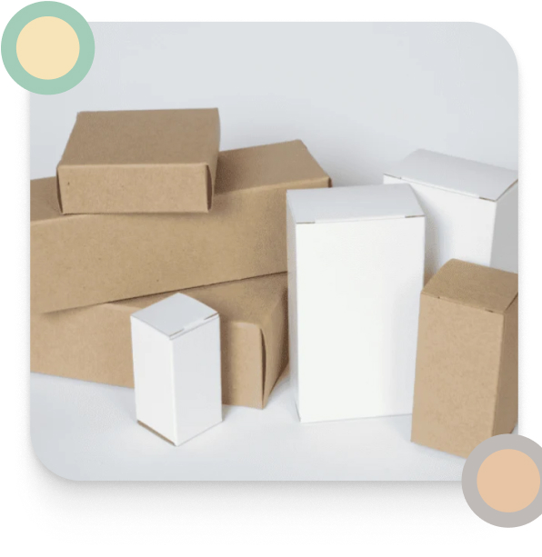
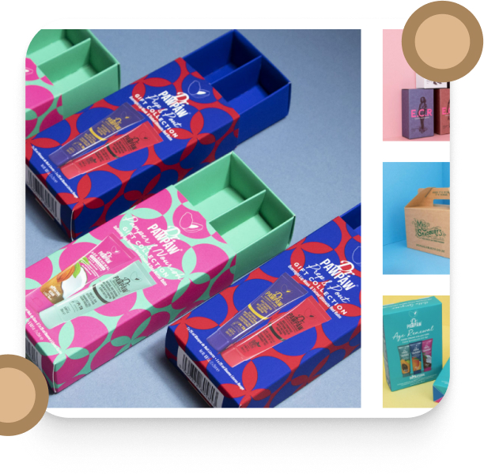
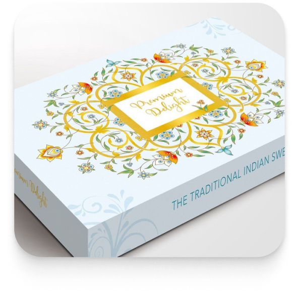
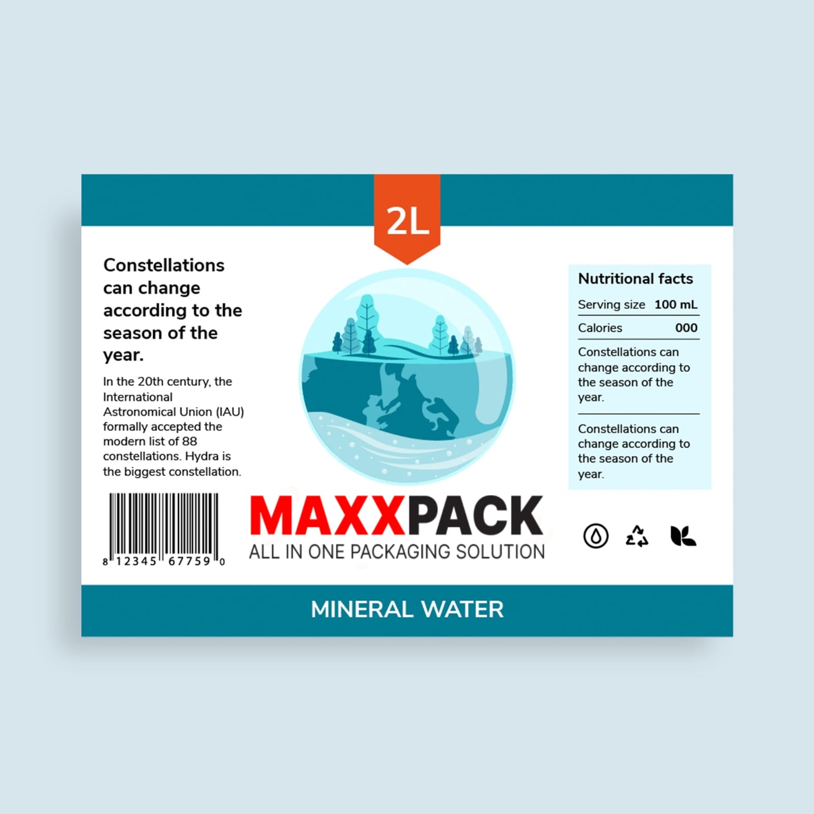
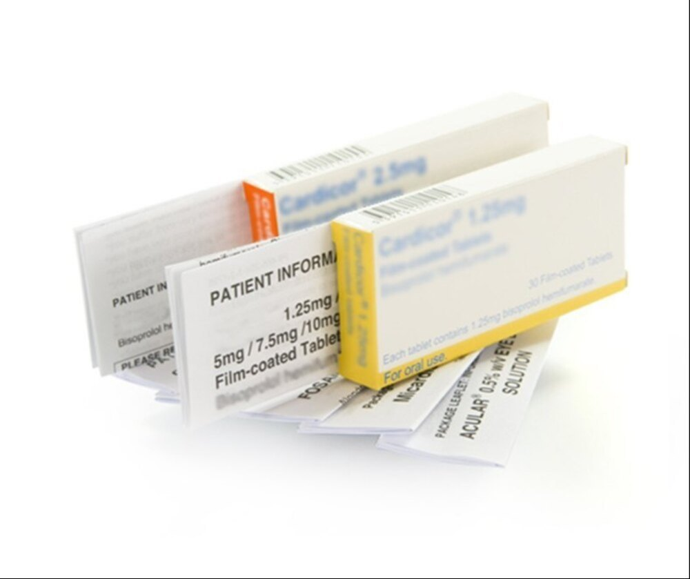

What we do
Versatile consumer product packaging solutions: Mono Carton Boxes, Corrugated Boxes, Paper Board Cartons, Rigid Boxes, Food Boxes and Electronics products Boxes, Custom Sticker labels and Pharmaceuticals Inserts. This type of more information please check
-
Mono Carton Box Packaging
A mono carton box is a lightweight, single-layer packaging solution commonly used for retail products. Made from paperboard, it's ideal for protecting items while showcasing branding and product information. These boxes are cost-effective, easy to manufacture, and can be customized in various sizes and designs. Their eco-friendly nature, combined with their durability, makes them a popular choice for packaging in various industries, from cosmetics to pharmaceuticals.
-

Paper Board Cartons
Paper or cartons box are usually used to pack single products. Its lightweight design makes it an ideal packaging device for on-shelf items. Also, printing and graphic designing are easier and more effective on this box. Thus, it can sport eye-catching and appealing profiles of your products while giving it a productive coverage.
-

Printed Corrugated Boxes
These recyclable boxes are commonly used to pack and carry heavy items such as electronics, appliances, wine, fruit & vegetables. They are strong and durable because of their layered paper material. Its main strength comes from the wavy ripple in the middle. They are called corrugated because of these ripples - Flutes.
-

Rigid Boxes
Premium rigid boxes are some of the most commonly used and sought after boxes within the luxury packaging industry. It is made up of two main components, a primary chipboard component, the main structural component of the box, and the wrapping that encases the box, which serves as the place for brand messaging.
-

Sticker Label
From the quality of primary machines to quality checking equipment and in training, we take the utmost care to promote a quality mindset. We maintain a strong in-process quality control system and a stringent line clearance system to ensure every job passes a wide range of checkpoints before and during production. A well-trained team of dedicated IPQC personnel ensures compliance as per the sampling plan. As an additional measure of risk reduction for our customers, we have invested heavily in fully automated defect detection systems.
-

Pharmaceuticals Inserts
We specialize in the manufacturing of high-quality pharmaceutical inserts, ensuring precision and compliance with industry standards. Our inserts are designed to provide clear, concise information for healthcare professionals and patients, using advanced printing technology and stringent quality control processes. With a focus on accuracy and clarity, we offer a range of customizable options to meet specific client requirements. Our commitment to excellence ensures that every insert is produced with the utmost care, reflecting our dedication to supporting the pharmaceutical industry with reliable and effective communication tools.
.jpeg)